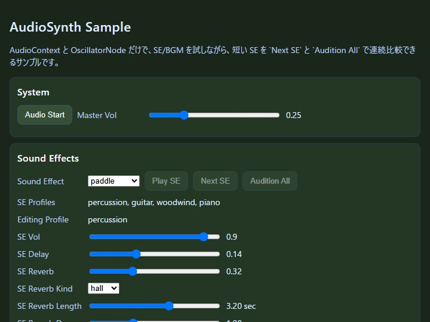

sound
English | 日本語

概要
- AudioSynth と GameAudioSynth を使い、SE と BGM を同じ画面で調整しながら確認するサンプルです。
- Audio Start で AudioContext を開始し、Play SE、Next SE、Audition All、BGM Start を使って音を鳴らし、その場で volume、delay、reverb、envelope、melody を調整できます。
- 「何を鳴らすか」と「どう聞こえるように整えるか」を 1 画面で往復しながら確認できる構成です。
画面の見方
画面は System、Sound Effects、Background Music の 3 つに分かれています。順番に見ると、まず AudioContext を起こし、そのあと SE を調整し、最後に melody、BPM、BGM envelope、BGM reverb を直接動かして BGM の細かな輪郭を整える流れになっています。
System では Audio Start と Master Vol を扱います。Audio Start は browser の制約に合わせて user gesture の後に AudioContext を開始するためのボタンです。Master Vol は全体音量の基準です。ここを最初に整えると、SE と BGM の相対バランスを見やすくなります。
Sound Effects では、Sound Effect で鳴らす効果音を選び、Play SE で再生します。Next SE は catalog を 1 件ずつ進めて、Audition All は全件を順番に鳴らして差を聞き比べるためのボタンです。SE Profiles はその効果音が使う envelope profile の一覧、Editing Profile は今 slider で編集している profile 名です。SE Vol、SE Delay、SE Reverb、SE Reverb Kind、SE Reverb Length、SE Reverb Decay、SE Envelope、SE Attack、SE Decay、SE Sustain、SE Release を使うと、同じ効果音でも輪郭や空間感をかなり細かく変えられます。
Background Music では、BGM Start と BGM Stop、BGM Vol、BPM、Melody、BGM Delay、BGM Reverb、BGM Reverb Kind、BGM Reverb Length、BGM Reverb Decay、BGM Attack、BGM Decay、BGM Sustain、BGM Release を扱います。BGM は melody と BPM で進行そのものが変わるので、SE とは少し違って、時間の流れを聞きながら調整するのが向いています。
実行方法
- 実行ファイルは ./sound.html です
- WebGPU に対応したブラウザで開き、必要に応じて help panel や HUD と合わせて確認してください
使用している webg 機能
- GameAudioSynth: ゲーム向けの効果音 catalog と melody preset をまとめて扱う
- AudioSynth: SE/BGM の envelope、delay、reverb、IR 設定を担当する
確認ポイント
最初にやることは Audio Start です。これで音を出せる状態にしてから、Sound Effect と Play SE で短い効果音を確認し、BGM Start でメロディを流します。音の輪郭を見たいときは SE Envelope、空間感を見たいときは SE Reverb Kind と SE Reverb Length と SE Reverb Decay、BGM の流れを見たいときは Melody と BPM を動かします。
このサンプルでは、SE Dry / SE Reverb Max と BGM Dry / BGM Wet という比較用の固定ボタンも用意しています。slider の中間値だけだと違いが分かりにくいときは、いったん極端な状態に振ってから戻すと、変化の方向がつかみやすくなります。
SE Reverb Kind と BGM Reverb Kind は room、hall、plate を切り替えます。これは単に残響を増やすボタンではなく、残響の性格そのものを変える設定です。Length は IR の長さ、Decay は減衰の早さを表します。短めで締まった room から、長く広がる hall まで、連続的に聞き比べることができます。
SE Envelope は、選んだ効果音が使う envelope profile を切り替える場所です。profile 名は percussion、brass、woodwind、organ、piano、guitar のような楽器カテゴリになっており、打撃音、吹奏感、持続音、弦を弾いた音のような時間変化を比較できます。SE Attack、SE Decay、SE Sustain、SE Release を動かすと、次に鳴るその profile の音が変わります。短い効果音は差が分かりにくいことがあるので、tail_probe を選ぶと、前半の輪郭音と後半の余韻の両方で違いを聞き取りやすくなります。
BGM Envelope は、BGM の一音一音の立ち上がりと余韻を決めます。BGM Attack、BGM Decay、BGM Sustain、BGM Release を動かすと、同じ melody でも印象が変わります。BPM は進む速さ、Melody は旋律の形を変えるので、BGM は「何を鳴らすか」と「どう進むか」を別々に見ると調整しやすいです。BGM 側の reverb は SE より少し強めの hall 既定にしてあるので、Audition All で melody を流したときに、フレーズの尾が長めに残る感触を先に掴みやすくしています。
まず Audio Start を押して、Play SE、Next SE、Audition All、BGM Start が有効になることを確認します。次に Sound Effect を切り替え、SE Profiles と Editing Profile が選んだ音に合わせて変わることを確認します。そのうえで SE Attack、SE Decay、SE Sustain、SE Release と SE Reverb を動かし、同じ効果音を鳴らし直して差を聞き比べます。
Audition All を押したときは、catalog 全体が順番に鳴ることを確認します。途中で止めたくなったら同じボタンを押して止められます。Next SE は 1 件ずつ進むので、気になった効果音をもう 1 度鳴らしたいときに便利です。
SE Reverb Kind を room、hall、plate で切り替えると、同じ wet 量でも反射の質感が変わります。SE Reverb Length と SE Reverb Decay を変えると、残響の長さと落ち方が変わります。tail_probe を選ぶと、短い効果音よりも envelope と reverb tail の違いが追いやすくなります。
BGM 側では Melody を変えながら BPM と BGM Envelope を調整し、同じ音源でも印象がどう変わるかを確認します。BGM Reverb Kind、BGM Reverb Length、BGM Reverb Decay を動かすと、同じ旋律でも空間の広がり方が変わることが分かります。初期値は hall 寄りで少し強めにしてあるので、まずはそのまま鳴らしてから dry 側へ戻すと差が分かりやすいです。
操作方法
このサンプルはキーボード入力ではなく、画面上の UI ボタンと slider で操作します。
Audio Start は AudioContext の開始、BGM Start / BGM Stop は BGM の開始と停止、Play SE は選択中の効果音を 1 回鳴らすボタンです。SE Dry / SE Reverb Max と BGM Dry / BGM Wet は比較用の固定状態へ切り替えるボタンです。
つまずきやすい点
Audio Start を押していないと、音は鳴りません。これは browser の制約に合わせた動きです。まず AudioContext を開始してから、他のボタンを押してください。
SE Reverb と SE Reverb Kind は別の設定です。SE Reverb は残響の量、Kind は残響の性格です。BGM 側も同じで、BGM Reverb は量、BGM Reverb Kind は性格です。
SE Attack や BGM Attack は秒、SE Sustain や BGM Sustain は比率です。単位が違うので、slider を動かすときは表示値も一緒に見ると分かりやすいです。
関連文書
18_サウンドの設計.md は実装の詳しい説明、01_はじめに.md はプロジェクト全体の入口です。この README.md は、サンプルの画面をどう触るかに集中した案内として読むと分かりやすくなります。